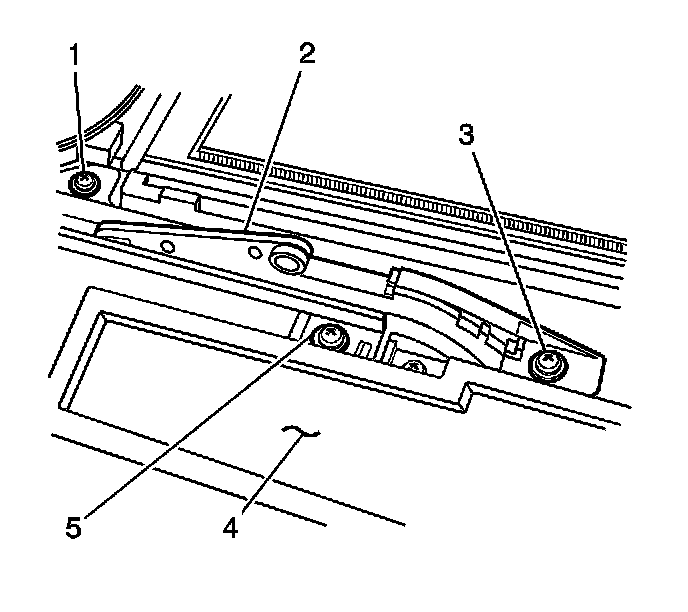

Sunroof Front Window Rear Track Assembly Replacement
Sunroof Front Window Rear Track Assembly Replacement
Removal Procedure
Important: The side trim covers overlap. This procedure requires the removal of the front trim cover and 2 side trim covers on the same side.
1. Remove the roof side trim covers from the side of the tracks in order to access the rear track screws being serviced. Refer to Sunroof Exterior Trim Cover Replacement (Front) (Sunroof Exterior Trim Cover Replacement (Front))Sunroof Exterior Trim Cover Replacement (Rear) (Sunroof Exterior Trim Cover Replacement (Rear))Sunroof Exterior Trim Cover Replacement (Rear Sides) (Sunroof Exterior Trim Cover Replacement (Rear Sides))Sunroof Exterior Trim Cover Replacement (Front Sides) (Sunroof Exterior Trim Cover Replacement (Front Sides)) .
2. Remove the front, center, and rear sunroof window. Refer to Sunroof Window Replacement (Front) (Service and Repair)Sunroof Window Replacement (Rear Vent) (Service and Repair)Sunroof Window Replacement (Center) (Service and Repair)Sunroof Window Replacement (Rear Stationary) (Service and Repair) .

3. Remove the rear track screws (1, 5).
4. Remove the rear track front extension screws (3, 5).
5. Lift the rear track from the sunroof frame.
6. Slide the window panel guide assembly from the rear track panel.
7. Remove the front extension from the track.
Installation Procedure
1. Slide the window panel guide assembly (2) into the rear track rail.
2. Install the front extension to the track.
3. Position the rear track to the sunroof frame.
4. Install the rear track screws (1, 5).
5. Loosely install the screws for the entire length of the tracks. Ensure that the track being serviced is parallel to the other track.
Notice: Refer to Fastener Notice (Fastener Notice) .
6. Install the rear track front extension screw (3, 5)
Tighten the screws to 5 N.m (44 lb in).
7. Install the rear, center, and front windows. Refer to Sunroof Window Replacement (Front) (Service and Repair)Sunroof Window Replacement (Rear Vent) (Service and Repair)Sunroof Window Replacement (Center) (Service and Repair)Sunroof Window Replacement (Rear Stationary) (Service and Repair) .
8. Install the sunroof exterior trim covers to the side of the track that was serviced. Refer to Sunroof Exterior Trim Cover Replacement (Front) (Sunroof Exterior Trim Cover Replacement (Front))Sunroof Exterior Trim Cover Replacement (Rear) (Sunroof Exterior Trim Cover Replacement (Rear))Sunroof Exterior Trim Cover Replacement (Rear Sides) (Sunroof Exterior Trim Cover Replacement (Rear Sides))Sunroof Exterior Trim Cover Replacement (Front Sides) (Sunroof Exterior Trim Cover Replacement (Front Sides)) .